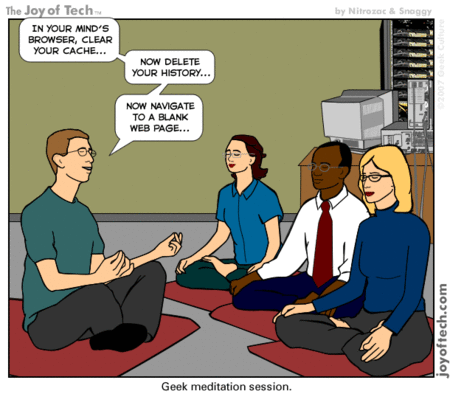

For the last two years, dojo4 has hosted 20 minutes of silent, secular meditation every Tuesday morning from 8:40 to 9am. It's open to anyone, long-time meditators and newbies alike. Simple instruction in mindfulness-based meditation, that focuses on the breath, is available upon request. We host it because we've found meditation to be super useful for ourselves and figure others in the neighborhood might like a place to meditate once a week, as well. So bring yourself, bring your friends and come sit at dojo4 every Tuesday morning...
geek cartoon thanks to joyoftech.com , monk cartoon thanks to the New Yorker